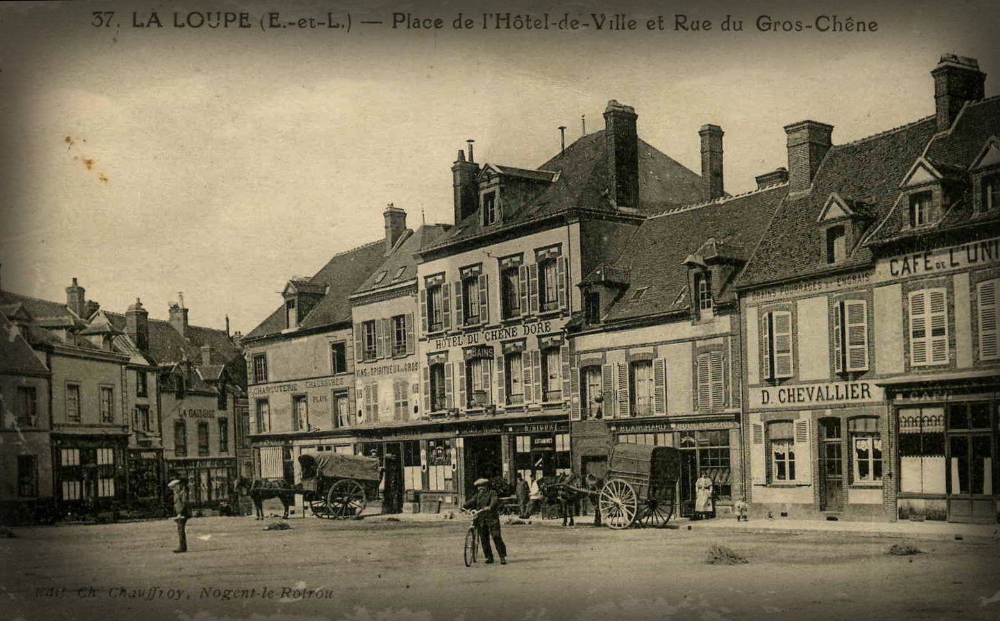
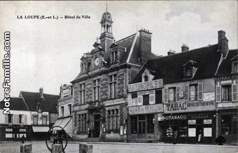
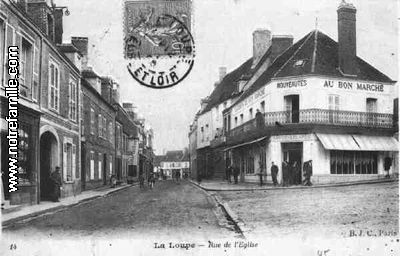
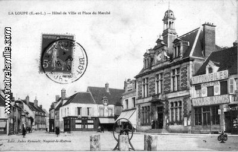
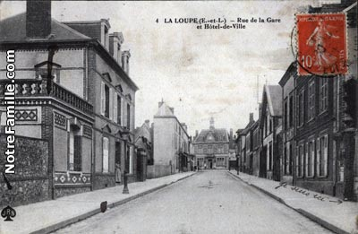
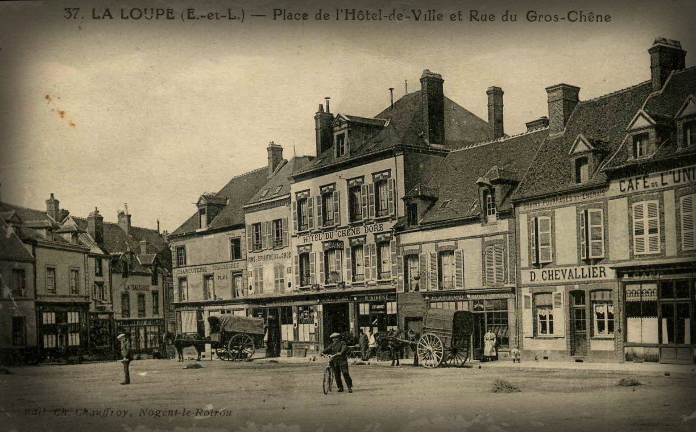
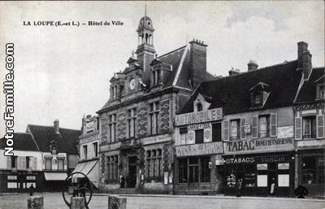
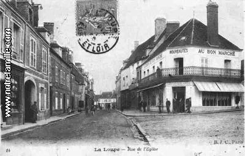
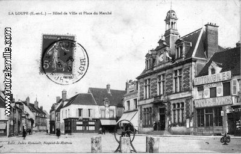
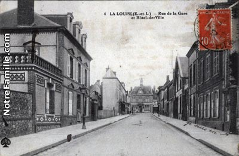

Selon les plus anciens documents retrouvés à ce jour, La Loupe faisait partie des terres du diocèse de Chartres, baillée à Thibault le Grand, comte de Champagne et de Chartres, mort en 1152. Le comte de Sancerre hérita alors de la châtellenie en 1232. Son fils, Étienne de Saint-Coesair, comte du Perche, fit bâtir la chapelle Notre-Dame-des-Fleurs au pied du château. Au XIVe siècle, le domaine passa successivement dans les familles de Melun, de Préaux, de la Revière et d'Angennes. Le 26 août 1393, le fief de La Loupe fut vendu à Renaud II d'Angennes, seigneur de Rambouillet. Le manoir féodal fut détruit par les Anglais au XVe siècle et fut reconstruit en 1574. La commune a repris les armoiries de la famille d'Angennes, y ajoutant le gros chêne (une curiosité route de Rémalard) ainsi que la croix de guerre en souvenir du bombardement de 1944. Sous l'Ancien Régime, La Loupe dépendait du bailliage principal de Chartres, du gouvernement militaire et de la généralité d'Orléans. En 1801, une petite partie de La Loupe est dévastée par le feu.
Le 1er juin 1811, l'Empereur Napoléon 1er et l'Impératrice Marie-Louise furent reçus à La Loupe, ce qui occasionna une dépense à laquelle durent contribuer les communes les plus riches de l'arrondissement. Au milieu du XIXe siècle, La Loupe exporte de la chaux vers Paris, on en retrouve la trace sur les murs de consolidations qui soutiennent la capitale dans les Anciennes carrières de Paris. 1857: inauguration de la Gare de chemin de fer de La Loupe et du tronçon Paris-Le Mans de la ligne Paris-Brest Les Prussiens occupèrent la commune du 20 novembre 1870 au 14 mars 1871. Paul Deschanel (1855-1922), député d'Eure-et-Loir, président de la Chambre et futur président de la République (en 1920) avait surnommé la ville « l'Athènes d'Eure-et-Loir ». 1899: La Loupe devient une "étoile ferroviaire" (également dépôt de machines à vapeur) avec l'ouverture des lignes vers Brou, vers Senonches, vers Nogent-le-Rotrou. 1913: Mise en service du tramway rural (voie métrique) en direction de Longny-au-Perche, Mortagne au Perche
 









Le 23 novembre 1929, un gros incendie détruisit l'église, ce qui permit la découverte du tombeau des seigneurs d'Angennes. Entre le 29 janvier 1939 et le 8 février, plus de 2 000 réfugiés espagnols fuyant l'effondrement de la république espagnole devant les troupes de Franco, arrivent en Eure-et-Loir. Devant l'insuffisance des structures d'accueil (le camp de Lucé et la prison de Châteaudun rouverte pour l’occasion), 53 villages sont mis à contribution20, dont La Loupe21. Les réfugiés, essentiellement des femmes et des enfants (les hommes sont désarmés et retenus dans le sud de la France), sont soumis à une quarantaine stricte, vaccinés, le courrier est limité, le ravitaillement, s'il est peu varié et cuisiné à la française, est cependant assuré22. Une partie des réfugiés rentrent en Espagne, incités par le gouvernement français qui facilite les conditions du retour, mais en décembre, 922 ont préféré rester et sont rassemblés à Dreux et Lucé23.

Le 17 juin 1944, en début de soirée, le centre-ville est bombardé à tort par 7 bombardiers alliés qui manquent la cible prévue, un dépôt d'essence allemand. Le bilan est lourd : 73 personnes sont tuées, dont le maire de l'époque, et plus de 100 sont blessées, 92 immeubles sont détruits, 83 sont devenus inhabitables et environ 250 sont endommagés. La Loupe devenait la ville la plus sinistrée de la Seconde Guerre mondiale du département et sera décorée de la Croix de guerre le 11 novembre 1948.